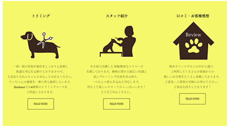

Concept 「 安心して犬が遊びに来れる場所 」
愛犬を預けるのに一番心配なのは、どんなスタッフが施術するかだと考え、
スタッフの顔が分かるようにしました。
新規顧客の獲得、リピーター増加が目的。
- 制作過程 -
【 概要 】
訓練校での授業で作成しました。
架空のお店や企業のWEBサイトを自由に作成しました。
jQueyを習った後、ナビとスライドショーに動きをつけました。

Target
【ペルソナ】30代パート女性。
4人家族（父・母・子供2人）初めて犬を飼った。
愛犬には良いサービスを受けさせたいと考えているが、
まだ学生の子どもにもお金がかかるので、節約している。
犬種はチワワ。4歳。初めての人には吠えやすく、怖がりな性格。
そんな性格を考慮して、安心して預けれる所を探している。
Design・Color
動物というと、不清潔なイメージを持つ人が
少なからずいると思うので、 清潔感があり、
安心して犬たちが遊びに来れる場所をテーマにデザインしました。
家族の一員の愛犬を預けるとき、どんな人が施術をするかが
とても気になると考え、メインビジュアルをスライドショーにし、
犬の写真以外にスタッフの顔を出しました。
また、スタッフの紹介ページ・スタッフブログ・お客様の声
といったコンテンツを設置しました。
メインカラーを黄色として、濃い目の茶色や黒と組み合わせ、
黄色とのメリハリをつけました。
黄色が引き立てられ、黄色が持つカラーイメージから、
トリミング技術でも柔軟な発想ができることを伝えたい。
トリマーに女性が多く、女性らしくなりすぎず
男性も気軽に来店しやすいようなイメージを心がけた。